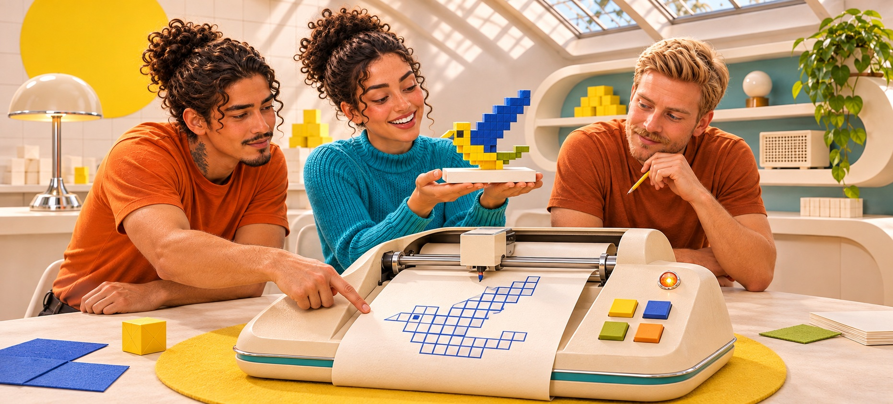
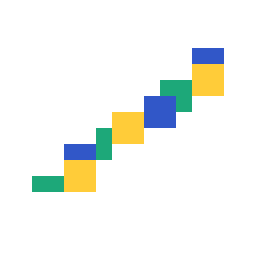
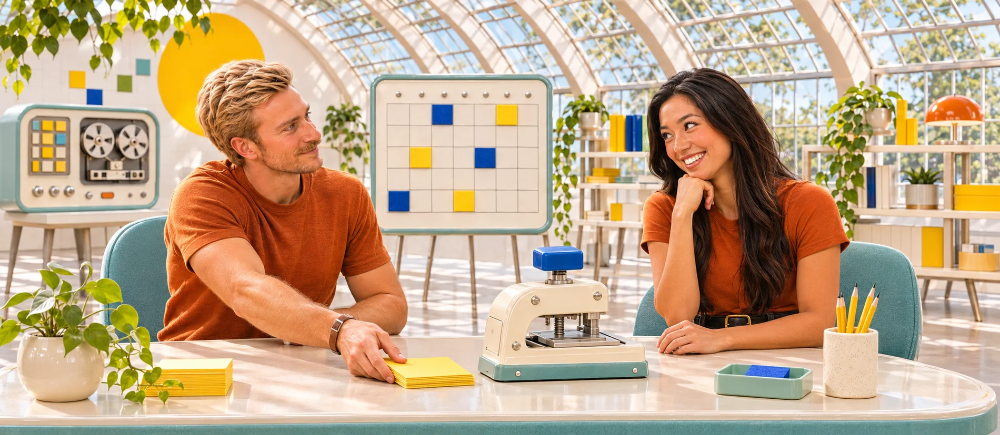
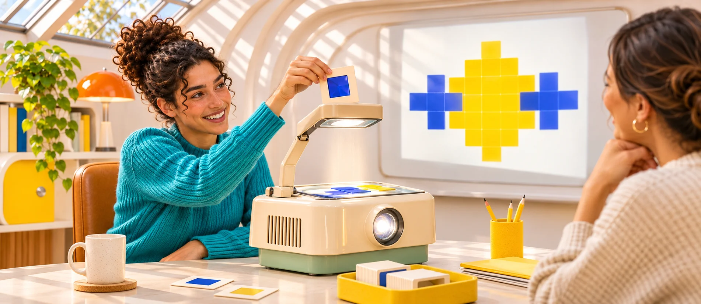
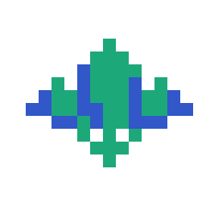

Human ambition,
amplified.
↓

Our visionSelf-driving companies.
Human direction.
Our vision is a company that can scale without asking people to spend their days coordinating it. Agents carry routine work from one step to the next. People set the direction and have time to change their minds.
In the room with us.

Nando gets the crew together.
“Same time next week?” Give Nando the time and the guest list. He can put the meeting on his calendar and prepare the invitations.

Lola puts an idea on the table.
Matt’s team gives Lola a workspace of her own. They choose what to share with her and which part of the work she takes on.

Milo opens the mic.
At AI Engineers Barcelona, Milo hosts the community podcast. Members bring the stories and decide what belongs on air.

Our ethosThe group sets the limits.
A neighborhood group and a company should each decide what an agent can see, what it can do, and when it must ask. People affected by a decision deserve a say in it.
How Shared shows up.
- Curious
- Ask one good question.
- Resourceful
- Make a first draft.
- Candid
- Say what needs work.
- Generous
- Give credit by name.
- Playful
- Leave room for delight.


It’s what we have in common.
We chose Shared for the things that make a group possible. A table to gather around. A purpose worth showing up for. Work that still belongs to everyone when the meeting ends.
Explore the brand guide ↗